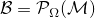
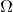
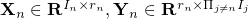
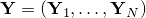
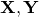
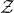
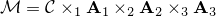
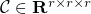
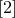
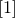

TMac: Tensor completion by parallel Matrix factorization
Background
Higher-order low-rank tensors with missing values naturally arise in many applications including hyperspectral data recovery, video inpainting, seismic data reconstruction, and so on. These problems can be formulated as low-rank tensor completion (LRTC). Existing methods for LRTC employ matrix nuclear-norm minimization and use the singular value decomposition (SVD) in their algorithms, which become very slow or even not applicable for large-scale problems. To tackle this difficulty, we apply low-rank matrix factorization to each mode unfolding of the tensor in order to enforce low-rankness and update the matrix factors alternatively, which is computationally much cheaper than SVD.
Our method
We aim at recovering a low-rank tensor from partial observations , where  is the index set of observed entries, and keeps the entries in and zeros out others. We apply low-rank matrix factorization to each mode unfolding of by finding matrices  such that for , where is the estimated rank, either fixed or adaptively updated. Introducing one common variable  to relate these matrix factorizations, we solve the following model
to relate these matrix factorizations, we solve the following model
where and . In the model, , , are weights and satisfy  .
We use alternating least squares method to solve the model.
.
We use alternating least squares method to solve the model.
Results
Our model is non-convex jointly with respect to  and . Although a global solution is not guaranteed, we demonstrate by numerical experiments that our algorithm can reliably recover a wide variety of low-rank tensors, such as the following phase transition plots. In the picture, each target tensor , where  and have Gaussian random entries. (a) FaLRTC: the tensor completion method in . (b) MatComp: first reshape the tensor as a matrix and then use the matrix completion solver LMaFit in . (c) TMac-fix: our method with and fixed to . (d) TMac-inc: our method with and using rank-increasing strategy starting from . (e) TMac-dec: our method with and using rank-decreasing strategy starting from .
The results show that our method performs much better than the other two methods.
Matlab code
Citation
Y. Xu, R. Hao, W. Yin, and Z. Su. Parallel matrix factorization for low-rank tensor completion, Inverse Problems and Imaging, 9(2015), 601–624.
References
 S. Gandy, B. Recht, and I. Yamada, Tensor completion and low--rank tensor recovery via convex optimization, Inverse Problems, 27(2011), p. 025010.
J. Liu, P. Musialski, P. Wonka, and Jieping Ye, Tensor completion for estimating missing values in visual data, IEEE Transactions on Pattern Analysis and Machine Intelligence, (2013), pp. 208-220.
Z. Wen, W. Yin, and Y. Zhang, Solving a low-rank factorization model for matrix completion by a nonlinear successive over-relaxation algorithm, Mathematical Programming Computation, (2012), pp. 1-29